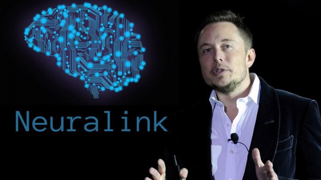

Elon Musk muốn biến việc phẫu thuật não để cấy chip lên đầu thành việc "thường tình", và hiển nhiên Musk muốn những con chip đầu tiên được cấy đại trà lên não bộ nhân loại thuộc công ty Neuralink do ông đồng sáng lập. Tham vọng của Musk là chữa được một số bệnh tâm lý, bên cạnh đó là giúp người tàn tật có thể cử động trở lại.
Không dừng lại ở đó, Musk còn mong muốn cung cấp khả năng "ngoại cảm" - giao tiếp mà không cần phải mở miệng hay tương tác trực tiếp với trí tuệ nhân tạo bằng não bộ. Xét tới sức mạnh công nghệ hiện tại, những gì Musk đề xuất là bất khả thi. Ta còn chưa hiểu hết về sức mạnh não bộ con người, nữa là tương tác giữa hai cỗ máy tính được cho là mạnh nhất, phức tạp nhất Vũ trụ.
